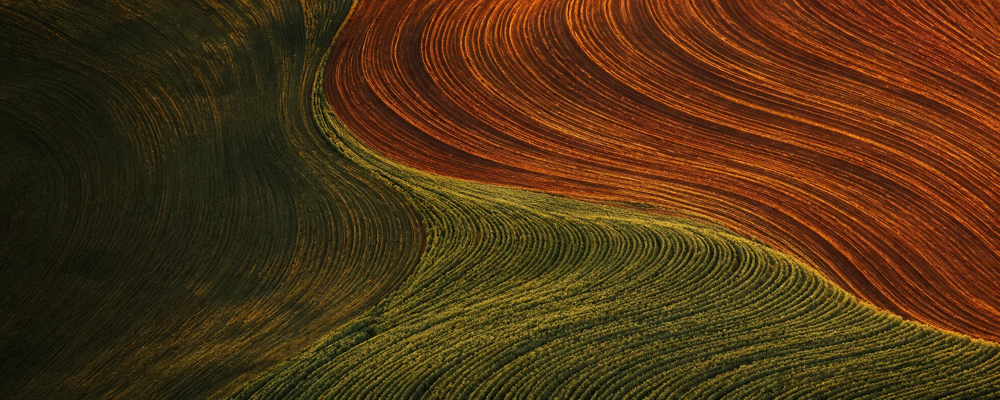
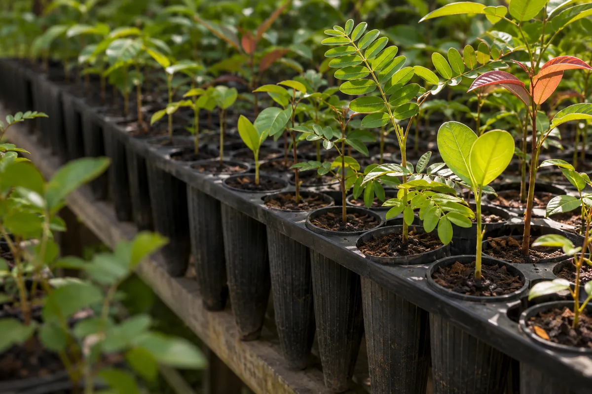

Bioeconomia circular e agricultura regenerativa
Planos de cultivo.
Rotas para resíduos.
A ArkheAnanda elabora diagnósticos por talhão e projetos de cultivo e restauração. Para cooperativas e agroindústrias que precisam encaminhar um lote de resíduos, compara os custos e as condições de cada destino.
Frentes de atuação
Baixar portfólio em PDF


Viveiros, paisagismo e restauração
O projeto reúne croqui, espécies e calendário de plantio. O fornecimento de mudas e o trabalho de implantação são cotados à parte.

Pesquisa e desenvolvimento
O projeto define como avaliar um material, qual referência usar e o que medir no ensaio de campo ou de viveiro.

Linhas de produtos
O fornecimento de mudas está em estudo. Para substratos, fertilizantes e biocarvão, consulte as linhas planejadas e as propostas de pesquisa.
Como trabalhamos
Quando vale trocar
o substrato?
Um exemplo de pesquisa aplicada em viveiro.

Começar pelo viveiro
Um viveiro considera mudar o substrato do próximo lote de mudas. A espécie, a fase de crescimento e o material em uso orientam a escolha da alternativa a testar.
Comparar no mesmo cultivo
O plano de ensaio define como comparar o substrato atual com a alternativa. Ele especifica as condições de cultivo e o que observar nas raízes e na parte aérea das mudas.
Decidir sobre o próximo lote
Quando o projeto inclui a execução do ensaio, o relatório compara os resultados. O viveiro pode então decidir se mantém o substrato atual, ajusta o teste ou amplia o uso da alternativa.
Converse sobre
o seu projeto.
Conte o que sua equipe pretende plantar, qual material precisa de destino ou o que gostaria de testar em campo.
Conversar pelo WhatsApp